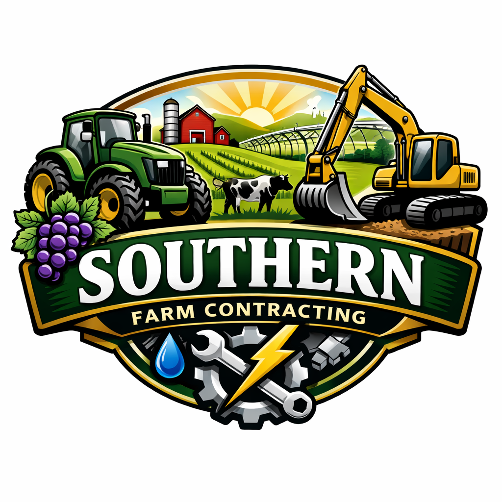

Network & Industry Partners



Drawing on more than 30 years of telecommunications, infrastructure, field operations, contracting, and regional project delivery experience across metro, regional, and remote Australia.
Request MobilisationFibre, wireless, network rollout support, regional communications infrastructure, and practical field deployment.
Experienced in technical field works, site access, practical equipment handling, and remote operational support.
Hands-on experience delivering work across rural and remote Australian environments.
Fibre, wireless and communications deployment support across regional and remote project environments.
Practical site access, field coordination, technical support, and contractor-ready delivery in demanding conditions.
Flexible mobilisation for telecommunications and infrastructure work across metropolitan, regional, and remote Australia.
LinkAus Networks reflects a background spanning telecommunications, technical operations, infrastructure support, contracting, and practical business delivery. The focus is straightforward: reliable work, regional capability, and practical outcomes.
